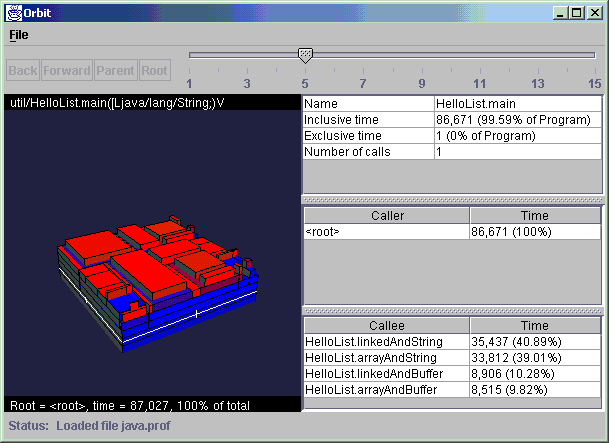

|
prophIt Overview

prophIt is an innovative visualization tool for
working with Java profiles. prophIt does not generate
profile data itself. Rather it reads data files generated
by a supported profiler
and presents them in a powerful user interface. |
Runtime EnvironmentprophIt is implemented using the Java Swing GUI library, using the GL4Java Java binding to OpenGL to render graphics-intensive parts of the UI. Windows is the only currently supported platform, but OpenGL is available for other platforms as well and prophIt will be supported on them as well.JavaWebStartprophIt uses JavaWebStart (version 1.0.1_02 or later) for installation and automatic upgrades. To run prophIt, first you need to obtain JavaWebStart:
Java VersionprophIt requires JDK 1.3 or higher. It will run and look better with JDK 1.4.0 or higher. |
|
Other Resources
|
|
prophIt Documentation |
|